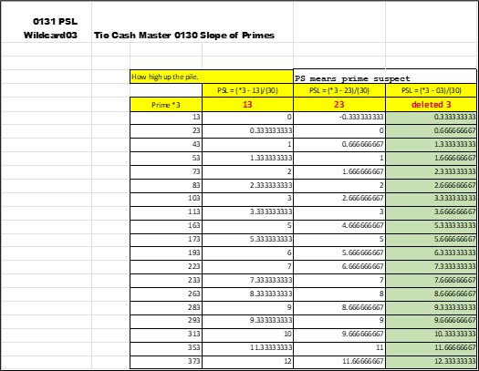
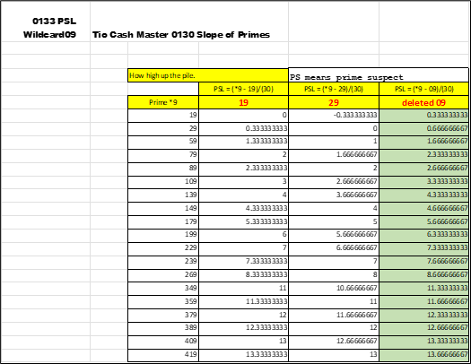
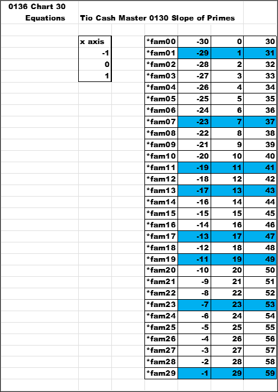
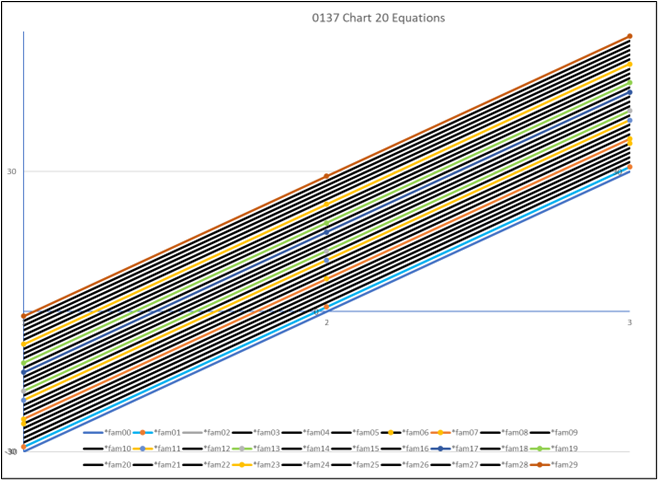
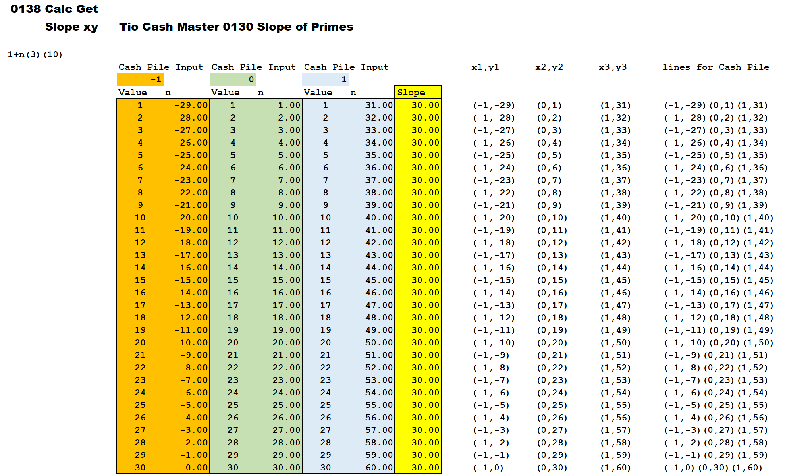

Next is a look at just prime numbers and calculating the slopes of the lines. The next series of arts and charts uses a list of prime numbers. There is a comparison of the prime numbers and the solution to the PSL (Prime Suspect Level).
This is a forced list of only the prime numbers that belong to *1. There are two columns for that , *fam01 and *fam11. The PSL is calculated for prime number. If the solution is an integer , then it belongs to that *fam. Note that there are gaps or missing integer values in both columns.
These gaps in the PSL are non-prime numbers , they have additional factors
This is a forced list of only the prime numbers that belong to *3.
This is a forced list of only the prime numbers that belong to *7.

This is a forced list of only the prime numbers that belong to *9.
The interesting portion of all this data: Where are the numbers that are missing in the PSL values?
These are the solution values for all *fam formulas from 0 to 30.
Here is a graph of the prior data. Just the eight *fam formulas are graphed with the data points.
Look at the top line on the graph , the x-axis is ( -1 , 0 , 1).
The y-values for *fam29 are ( -1 , 29 , 59) - 30 away from each other.
The line is ( -1 , -1 ) , ( 0 , 29 ) , ( 1 , 59 ) , look inside both boxes next to *fam29 in the above chart.
In the below chart , all thirty *fam from *fam00 to *fam29 are listed with the solutions for the formulas. The *fam values highlighted in blue are the eight *fam formulas that are sorted in and the focus of searching for prime numbers.
Below is a graph of all the *fam equations. The eight keeper (sorted in) formulas are in color. The excluded (sorted out) are all in black.
This image shows all the data points for prior graphs. The slope of all the lines is thirty.
Since all the slopes are thirty , the lines are straight. The question becomes , where are the missing values from the from the list of prime numbers?
I looked and decided the missing numbers are the non-prime that were sorted out of the forced lists above. The next step is to sort the non-primes back into the list. All numbers will then be viewed.
The next chapter on factors will bind the prime and non-prime numbers.